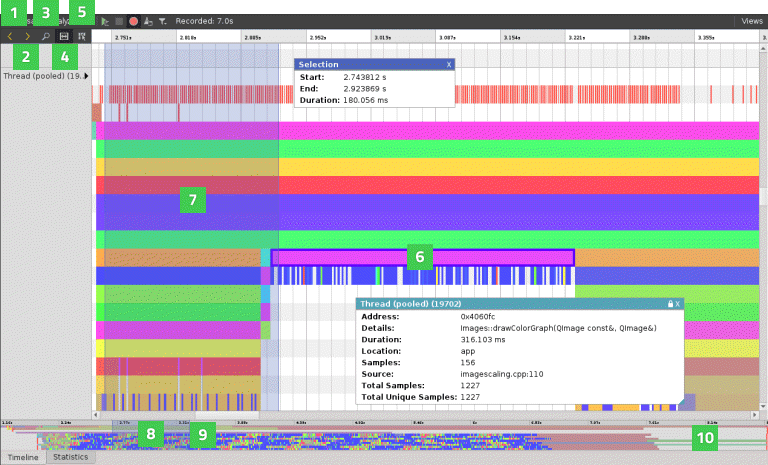

Analyzing CPU Usage
Qt Creator is integrated with the Linux Perf tool (commercial only) that can be used to analyze the CPU usage of an application on embedded devices and, to a limited extent, on Linux desktop platforms. The CPU Usage Analyzer uses the Perf tool bundled with the Linux kernel to take periodic snapshots of the call chain of an application and visualizes them in a timeline view.
Using the CPU Usage Analyzer
The CPU Usage Analyzer needs to be able to locate debug symbols for the binaries involved. For debug builds, debug symbols are always generated. Edit the project build settings to generate debug symbols also for release builds.
To use the CPU Usage Analyzer:
- To generate debug symbols also for applications compiled in release mode, select Projects, and then select Details next to Build Steps to view the build steps.
- Select the Generate separate debug info check box, and then select Yes to recompile the project.
- Select Analyze > CPU Usage Analyzer to profile the current application.
- Select the
 (Start) button to start the application from the CPU Usage Analyzer.
(Start) button to start the application from the CPU Usage Analyzer.Note: If data collection does not start automatically, select the
 (Collect profile data) button.
(Collect profile data) button.
When you start analyzing an application, the application is launched, and the CPU Usage Analyzer immediately begins to collect data. This is indicated by the time running in the Recorded field. However, as the data is passed through the Perf tool and an extra helper program bundled with Qt Creator, and both buffer and process it on the fly, data may arrive in Qt Creator several seconds after it was generated. An estimate for this delay is given in the Processing delay field.
Data is collected until you select the Stop collecting profile data button or terminate the application.
Select the Stop collecting profile data button to disable the automatic start of the data collection when an application is launched. Profile data will still be generated, but Qt Creator will discard it until you select the button again.
Specifying CPU Usage Analyzer Settings
To specify global settings for the CPU Usage Analyzer, select Tools > Options > Analyzer > CPU Usage Analyzer. For each run configuration, you can also use specialized settings. Select Projects > Run, and then select Details next to CPU Usage Analyzer Settings.
Selecting Call Graph Mode
Select the command to invoke Perf in the Call graph mode field. The Frame Pointer, or fp, mode relies on frame pointers being available in the profiled application.
The Dwarf mode works also without frame pointers, but generates significantly more data. Qt and most system libraries are compiled without frame pointers by default, so the frame pointer mode is only useful with customized systems.
Setting Stack Snapshot Size
In the dwarf mode, Perf takes periodic snapshots of the application stack, which are then analyzed and unwound by the CPU Usage Analyzer. Set the size of the stack snapshots in the Stack snapshot size field. Large stack snapshots result in a larger volume of data to be transferred and processed. Small stack snapshots may fail to capture call chains of highly recursive applications or other intense stack usage.
Setting Sampling Frequency
Set the sampling frequency for Perf in the Sampling frequency field. High sampling frequencies result in more accurate data, at the expense of a higher overhead and a larger volume of profiling data being generated. The actual sampling frequency is determined by the Linux kernel on the target device, which takes the frequency set for Perf merely as advice. There may be a significant difference between the sampling frequency you request and the actual result.
In general, if you configure the CPU Usage Analyzer to collect more data than it can transmit over the connection between the target and the host device, the application may get blocked while Perf is trying to send the data, and the processing delay may grow excessively. You should then lower the Sampling frequency or the Stack snapshot size.
Adding Command Line Options For Perf
You can specify additional command line options to be passed to Perf when recording data in the Additional arguments field. You may want to specify --no-delay or --no-buffering to reduce the processing delay. However, those options are not supported by all versions of Perf and Perf may not start if an unsupported option is given.
Aggregating Data
In the Granularity field, you can specify whether the data should be aggregated by function or by binary address.
If you choose Function, all stack frames will be reported with the start address of the function they belong to. Thus, you get a concise overview in the Statistics view, with one entry per function. In the Timeline view, all stack frames from the same function will then have the same color. However, this way you cannot track down which exact lines of code took the most time to execute.
If you choose Address, the exact address of each stack frame in each sample is reported. Those addresses are then mapped to lines of code, which means that the same function or even line can show up multiple times in the Statistics view. Further, stack frames from the same function will have different colors in the Timeline view, depending on the exact value of the program counter when the sample was recorded.
Resolving Names for JIT-compiled JavaScript Functions
From version 5.6.0, Qt can generate perf.map files with information about JavaScript functions. The CPU Usage Analyzer will read them and show the function names in the Timeline and Statistics views. This only works if the process being profiled is running on the host computer, not on the target device. To switch on the generation of perf.map files, add the environment variable QV4_PROFILE_WRITE_PERF_MAP to the Run Environment and set its value to 1.
Analyzing Collected Data
The Timeline view displays a graphical representation of CPU usage per thread and a condensed view of all recorded events.

Each category in the timeline describes a thread in the application. Move the cursor on an event (6) on a row to see how long it takes and which function in the source it represents. To display the information only when an event is selected, disable the View Event Information on Mouseover button (5).
The outline (10) summarizes the period for which data was collected. Drag the zoom range (8) or click the outline to move on the outline. You can also move between events by selecting the Jump to Previous Event (1) and Jump to Next Event (2) buttons.
Select the Show Zoom Slider button (3) to open a slider that you can use to set the zoom level. You can also drag the zoom handles (9). To reset the default zoom level, right-click the timeline to open the context menu, and select Reset Zoom.
Selecting Event Ranges
You can select an event range (7) to view the time it represents or to zoom into a specific region of the trace. Select the Select Range button (4) to activate the selection tool. Then click in the timeline to specify the beginning of the event range. Drag the selection handle to define the end of the range.
You can use event ranges also to measure delays between two subsequent events. Place a range between the end of the first event and the beginning of the second event. The Duration field displays the delay between the events in milliseconds.
To zoom into an event range, double-click it.
To remove an event range, close the Selection dialog.
Understanding the Data
Generally, events in the timeline view indicate how long a function call took. Move the mouse over them to see details. The details always include the address of the function, the approximate duration of the call, the ELF file the function resides in, the number of samples collected with this function call active, the total number of times this function was encountered in the thread, and the number of samples this function was encountered in at least once.
For functions with debug information available, the details include the location in source code and the name of the function. You can click on such events to move the cursor in the code editor to the part of the code the event is associated with.
As the Perf tool only provides periodic samples, the CPU Usage Analyzer cannot determine the exact time when a function was called or when it returned. You can, however, see exactly when a sample was taken in the second row of each thread. The CPU Usage Analyzer assumes that if the same function is present at the same place in the call chain in multiple consecutive samples, then this represents a single call to the respective function. This is, of course, a simplification. Also, there may be other functions being called between the samples taken, which do not show up in the profile data. However, statistically, the data is likely to show the functions that spend the most CPU time most prominently.
If a function without debug information is encountered, further unwinding of the stack may fail. Unwinding will also fail for some symbols implemented in assembly language. If unwinding fails, only a part of the call chain is displayed, and the surrounding functions may seem to be interrupted. This does not necessarily mean they were actually interrupted during the execution of the application, but only that they could not be found in the stacks where the unwinding failed.
JavaScript functions from the QML engine running in the JIT mode can be unwound. However, their names will only be displayed when QV4_PROFILE_WRITE_PERF_MAP is set. Compiled JavaScript generated by the Qt Quick Compiler can also be unwound. In this case the C++ names generated by the compiler are shown for JavaScript functions, rather than their JavaScript names. When running in interpreted mode, stack frames involving QML can also be unwound, showing the interpreter itself, rather than the interpreted JavaScript.
Kernel functions included in call chains are shown on the third row of each thread. All kernel functions are summarized and not differentiated any further, because most of the time kernel symbols cannot be resolved when the data is analyzed.
The coloring of the events represents the actual sample rate for the specific thread they belong to, across their duration. The Linux kernel will only take a sample of a thread if the thread is active. At the same time, the kernel tries to maintain a constant overall sampling frequency. Thus, differences in the sampling frequency between different threads indicate that the thread with more samples taken is more likely to be the overall bottleneck, and the thread with less samples taken has likely spent time waiting for external events such as I/O or a mutex.
Viewing Statistics
The Statistics view displays the number of samples each function in the timeline was contained in, in total and when on the top of the stack (called self). This allows you to examine which functions you need to optimize. A high number of occurrences might indicate that a function is triggered unnecessarily or takes very long to execute.
Click on a row to move to the respective function in the source code in the code editor.
The Callers and Callees panes show dependencies between functions. They allow you to examine the internal functions of the application. The Callers pane summarizes the functions that called the function selected in the main view. The Callees pane summarizes the functions called from the function selected in the main view.
Click on a row to move to the respective function in the source code in the code editor and select it in the main view.
When you select a stack frame in the Timeline view, information about it is displayed in the Statistics view. To view a time range in the Statistics view, select Limit Statistics to Selected Range in the context menu in the Timeline view.
To copy the contents of one view or row to the clipboard, select Copy Table or Copy Row in the context menu.
Loading Perf Data Files
You can load any perf.data files generated by recent versions of the Linux Perf tool and view them in Qt Creator. Select Analyze > Load Trace to load a file. The CPU Usage Analyzer needs to know the context in which the data was recorded to find the debug symbols. Therefore, you have to specify the kit that the application was built with and the folder where the application executable is located.
The Perf data files are generated by calling perf record. Make sure to generate call graphs when recording data by starting Perf with the --call-graph option. Also check that the necessary debug symbols are available to the CPU Usage Analyzer, either at a standard location (/usr/lib/debug or next to the binaries), or as part of the Qt package you are using.
The CPU Usage Analyzer can read Perf data files generated in either frame pointer or dwarf mode. However, to generate the files correctly, numerous preconditions have to be met. All system images for the Qt for Device Creation reference devices, except for Freescale iMX53 Quick Start Board and SILICA Architect Tibidabo, are correctly set up for profiling in the dwarf mode. For other devices, check whether Perf can read back its own data in a sensible way by checking the output of perf report or perf script for the recorded Perf data files.
Troubleshooting
The CPU Usage Analyzer might fail to record data for the following reasons:
- The connection between the target device and the host may not be fast enough to transfer the data produced by Perf. Try lowering the Stack snapshot size or Sampling Frequency settings.
- Perf may be buffering the data forever, never sending it. Add
--no-delayor--no-bufferingto the Additional arguments field. - Some versions of Perf will not start recording unless given a certain minimum sampling frequency. Try with a Sampling Frequency of 1000.
- On some devices, in particular various i.MX6 Boards, the hardware performance counters are dysfunctional and the Linux kernel may randomly fail to record data after some time. Perf can use different types of events to trigger samples. You can get a list of available event types by running
perf liston the device and add-e <event type>to the Additional arguments field to change the event type to be used. The choice of event type affects the performance and stability of the sampling.-e cpu-clockis a safe but relatively slow option as it does not use the hardware performance counters, but drives the sampling from software. After the sampling has failed, reboot the device. The kernel may have disabled important parts of the performance counters system.
Output from the helper program that processes the data is displayed in the General Messages output pane.